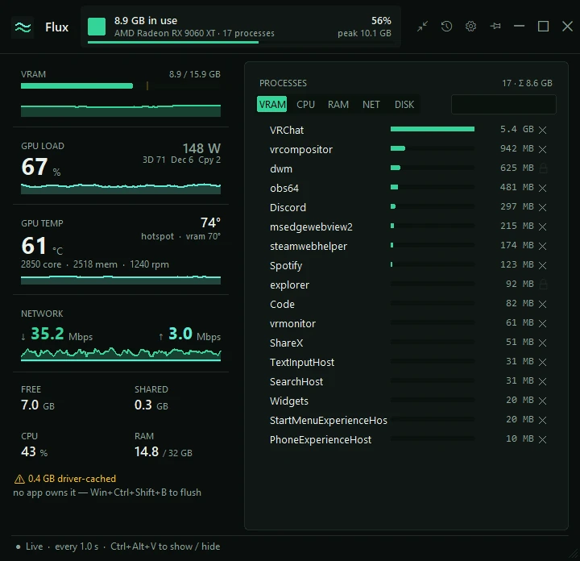
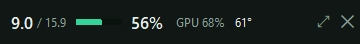
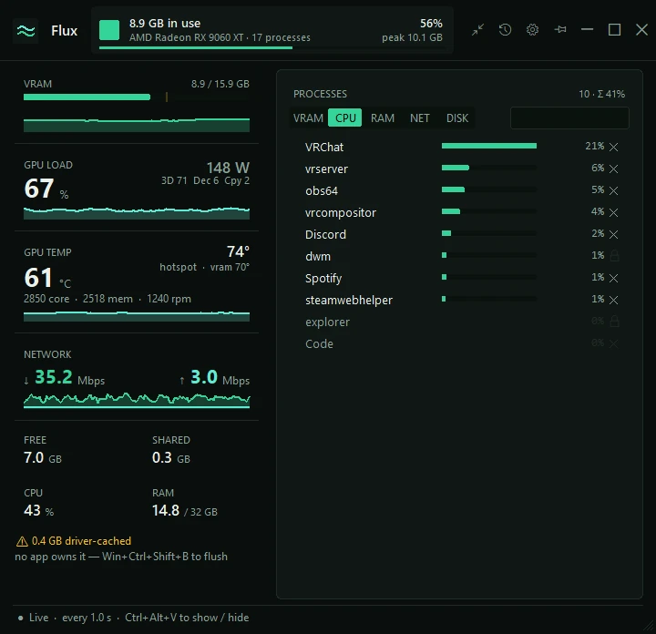

VRAM, out of the real total
Video memory in use against your card's true capacity (the figure Windows' WMI reports stops at 4 GB), the session's peak, and memory the driver holds that no app owns.
A tiny Windows monitor for your graphics card's memory: how much is in use, which apps are holding it, and a ✕ to end one and get it back.

Video memory in use against your card's true capacity (the figure Windows' WMI reports stops at 4 GB), the session's peak, and memory the driver holds that no app owns.
Every app using video memory, biggest first, with a search box. The ✕ ends one: it asks first and checks it's still the same process; system processes get a lock instead.
An amber ↑ marks an app whose VRAM keeps climbing. A sudden jump saves a list of every process, and a log every minute feeds an in-app report of peaks and climbs.
Switch the list to CPU, RAM, network or disk to see who's busy there. Click a card on the left to jump to its list. Only the per-app network view needs administrator rights.
GPU load and its busiest engines, power draw, core, hot-spot and memory temperature, clocks and fan speed, and your total download and upload.
Ctrl+Alt+V shows or hides it from anywhere. Pin it on top, or shrink it to a one-line strip. When VRAM passes your limit it pops up a note and beeps.
VRAM, CPU, RAM, NET or DISK: the switch above the list changes what it counts, always busiest first, and the header shows how many apps and their total. Or fold the whole window into one line.


Windows 10 or 11, any AMD, NVIDIA or Intel graphics card: memory and load come from Windows' own GPU counters. Temperatures, clocks and fan come from a bundled LibreHardwareMonitor running in a separate process (made on an AMD card); if no sensor answers, that card just hides. Settings and the log live in %LOCALAPPDATA%\Flux. From source: python vram_monitor.py (Python 3 with Tkinter; temperatures also need pythonnet).
Just replace your old Flux.exe; your settings and leak log carry over.
Release notes · 19 Sept 2026